This dataset provides components of population change in Kenya over several 5-year projection periods from 2020 to 2045. The dataset includes key demographic components such as births, deaths, natural increase, and migration, along with related population rates such as crude birth rate, crude death rate, natural increase rate, and net migration rate. The data is structured for each projection period.
Format
A data frame with 1,920 rows and 4 variables:
- county
Name of the county (factor).
- component
The demographic component being measured (factor). Possible values include:
- Births
The total number of births during the projection period.
- Deaths
The total number of deaths during the projection period.
- Nat. Inc.
Natural Increase: the difference between births and deaths during the projection period.
- Net Mig.
Net Migration: the net number of people entering or leaving Kenya during the projection period (immigrants minus emigrants).
- CBR
Crude Birth Rate: the number of births per 1,000 population per year during the projection period.
- CDR
Crude Death Rate: the number of deaths per 1,000 population per year during the projection period.
- CNIR
Crude Natural Increase Rate: the difference between the crude birth rate and crude death rate, representing natural population growth per 1,000 population per year.
- CNMR
Crude Net Migration Rate: the net migration rate, representing the net number of migrants per 1,000 population per year.
- year
The 5-year projection period (factor). Possible values are "2020-25", "2026-30", "2031-35", "2036-40", and "2041-45".
- value
The numeric value associated with the component for the specific projection period (numeric).
Source
Kenya National Bureau of Statistics (2023). 2019 Kenya Population and Housing Census Analytical Report on Population Projections. Retrieved from knbs.or.ke.
Details
This dataset captures various components of population change for Kenya from 2020 to 2045. It allows users to analyze demographic changes over time, including the impacts of births, deaths, migration, and natural increase on population size. The rates, such as the crude birth rate (CBR) and crude death rate (CDR), provide insights into demographic trends per 1,000 population.
Components Explained:
Births: Total births during the projection period (in thousands).
Deaths: Total deaths during the projection period (in thousands).
Natural Increase (Nat. Inc.): Difference between births and deaths (in thousands).
Net Migration (Net Mig.): Net migration (immigrants minus emigrants) during the projection period (in thousands).
Crude Birth Rate (CBR): Births per 1,000 people per year.
Crude Death Rate (CDR): Deaths per 1,000 people per year.
Crude Natural Increase Rate (CNIR): Natural increase per 1,000 people per year (CBR minus CDR).
Crude Net Migration Rate (CNMR): Net migration per 1,000 people per year.
Examples
data(components)
head(components)
#> # A tibble: 6 × 4
#> county component year value
#> <fct> <fct> <fct> <dbl>
#> 1 Kenya Births 2020-25 6404408
#> 2 Kenya Births 2026-30 6460085
#> 3 Kenya Births 2031-35 6475904
#> 4 Kenya Births 2036-40 6461490
#> 5 Kenya Births 2041-45 6418919
#> 6 Kenya Deaths 2020-25 1890966
summary(components)
#> county component year value
#> Baringo : 40 Births :240 2020-25:384 Min. : -29286
#> Bomet : 40 CBR :240 2026-30:384 1st Qu.: 6
#> Bungoma : 40 CDR :240 2031-35:384 Median : 21
#> Busia : 40 CNIR :240 2036-40:384 Mean : 67132
#> Elgeyo-Marakwet: 40 CNMR :240 2041-45:384 3rd Qu.: 50576
#> Embu : 40 Deaths :240 Max. :6475904
#> (Other) :1680 (Other):480
# Example: Plot the number of births over the projection periods for Kenya
library(ggplot2)
library(dplyr)
#>
#> Attaching package: ‘dplyr’
#> The following objects are masked from ‘package:stats’:
#>
#> filter, lag
#> The following objects are masked from ‘package:base’:
#>
#> intersect, setdiff, setequal, union
births <- components %>%
filter(component == "Births", county == 'Kenya')
ggplot(births, aes(x = factor(year, ordered = TRUE), y = value, group = county)) +
geom_line() +
geom_point() +
labs(
title = "Projected Births in Kenya (2020-2045)",
x = "Projection Period",
y = "Number of Births"
) +
theme_minimal()
